谁是最快的Go Web框架?, 这是我去年发布的Go web 框架的评测。现在一年过去了，有些框架因为缺乏维护而被放弃了，又有新的轮子被创造出来，既有的轮子也在不停的演化升级，来去之间，Go的版本也已经升级的1.8了。 青年节前， kirillDanshin提了一个issue,希望能更新最新的测试结果，现在这篇文章就记录了最新的测试结果。
测试环境
- CPU: Intel(R) Xeon(R) CPU E5-2630 v3 @ 2.40GHz, 32 cores
- Memory: 32G
- Go: 1.8.0
- OS: CentOS 7 / 3.10.0-229.el7.x86_64
所有的评测的 web 框架都已经更新到 2017-04-01 的最新版本。
说明
Julien Schmidt实现的 go-http-routing-benchmark 是对 router的一个评测，但是作为完整的web框架，从接收用户请求到发送给客户端／浏览器，中间会经过多个组件的处理， router的性能影响到底在整体的web请求处理中影像多大呢？看测试结果。
本项目的代码在 go-web-framework-benchmark, 你可以查看，也欢迎提 pull request。
测试中的 gear 测试代码有问题，没有加上router中间件， 你可以在这次测试中忽略它的benchmark。参看 # 33
模拟业务不同的处理时间框架的性能
使用 5000 个客户端模拟请求，比较各web框架在不同的处理时间下的性能。
1、0ms
0ms模拟理想的业务处理。在这种处理时间下， 每个请求基本只耗费小于1毫秒的处理时间，这是理想的极端的情况，比如访问内存中缓存的对象就返回。
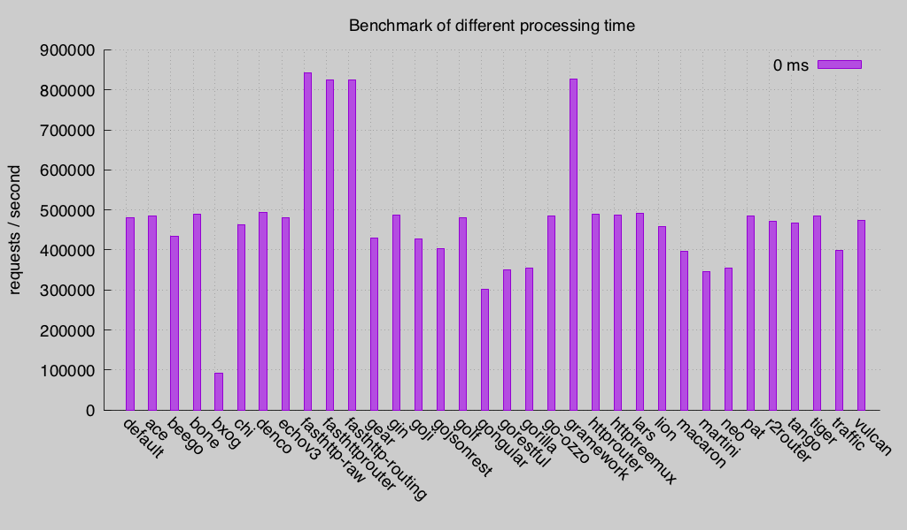
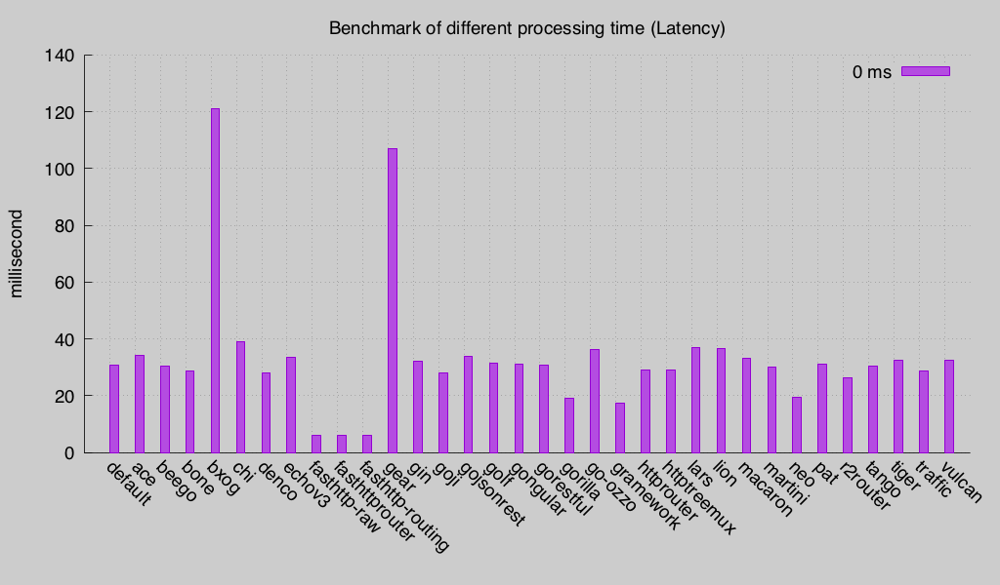
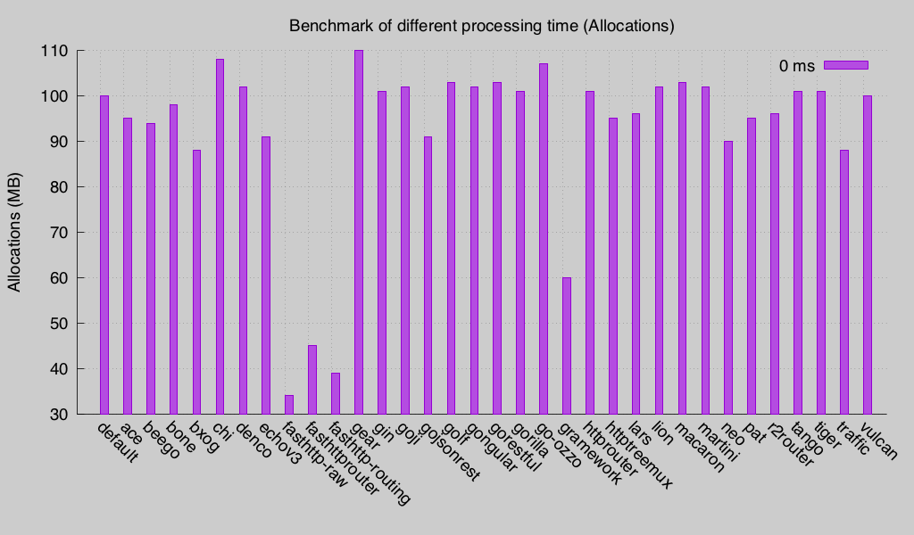
2、10ms
10ms模拟比较好的业务处理。在这种情况下，服务器只需在极短的情况下(10ms)处理完请求，如果业务不是太复杂，没有访问本地磁盘、数据库或者其它远程服务的情况下，比较符合这种测试。
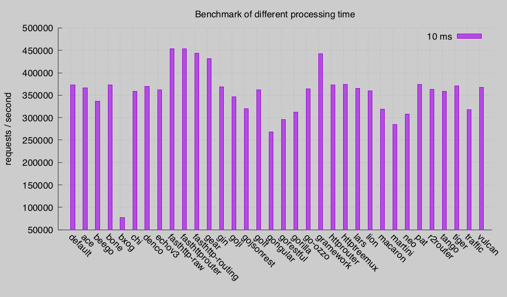
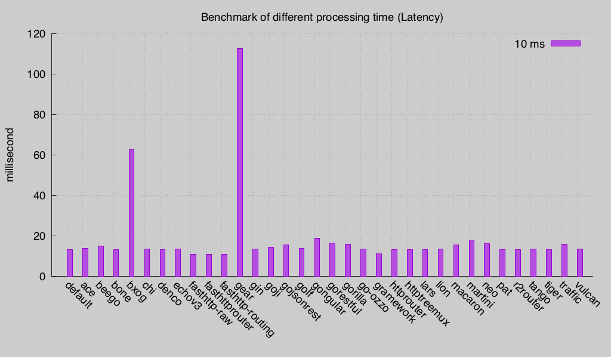
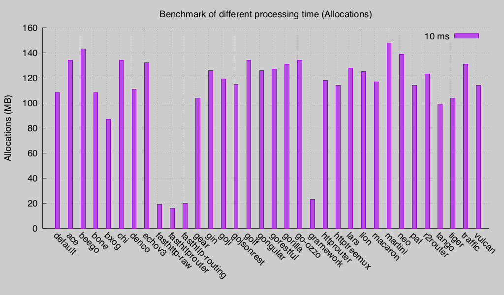
3、100ms
100ms模拟一般的业务处理。一般接收请求后，可能访问本地磁盘上的文件、数据库或者调用一个或多个远程服务，在这种情况下，完成一次请求可能要花费较少的时间。
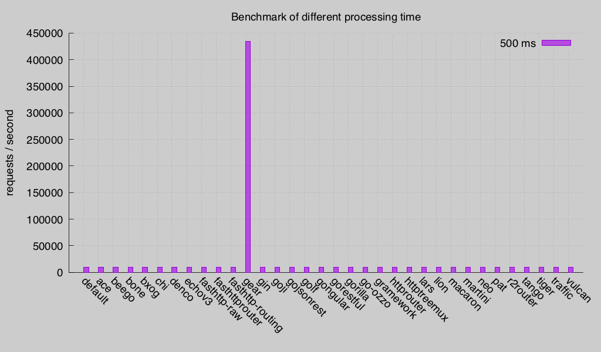
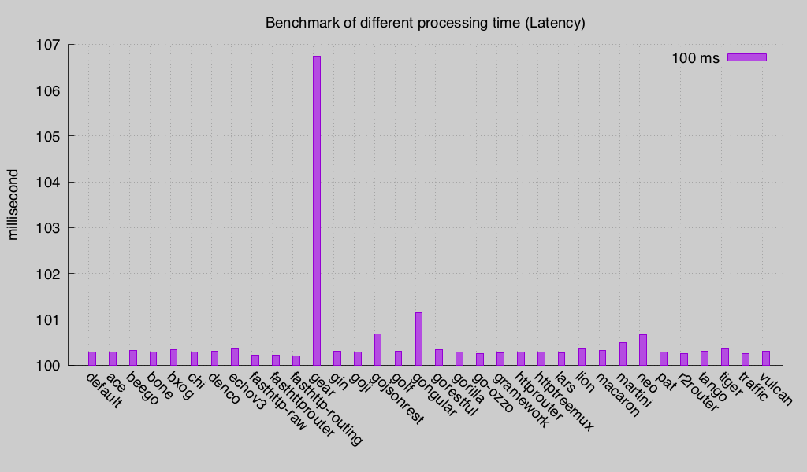
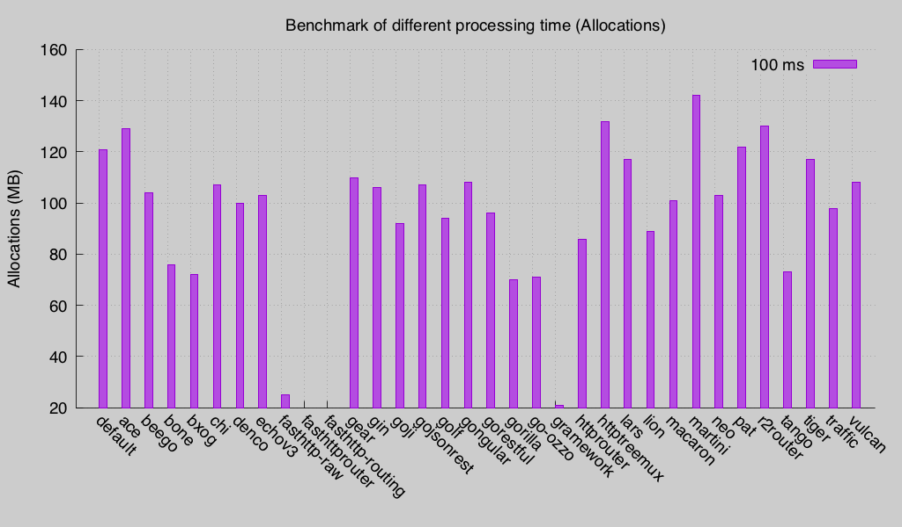
pipelining
这个测试是模拟在 pipelining 情况下 web 框架的表现。
HTTP管线化（HTTP pipelining）是将多个HTTP请求（request）整批提交的技术，而在发送过程中不需先等待服务端的回应。
请求结果管线化使得 HTML 网页加载时间动态提升，特别是在具体有高延迟的连接环境下，如卫星上网。在宽带连接中，加速不是那么显著的，因为需要服务器端应用 HTTP/1.1 协议:服务器端必须按照客户端的请求顺序恢复请求，这样整个连接还是先进先出的，对头阻塞（HOL blocking）可能会发生，造成延迟。未来的 HTTP/2.0 或者SPDY中的异步操作将会解决这个问题。因为它可能将多个 HTTP 请求填充在一个TCP数据包内，HTTP 管线化需要在网络上传输较少的 TCP 数据包，减少了网络负载。
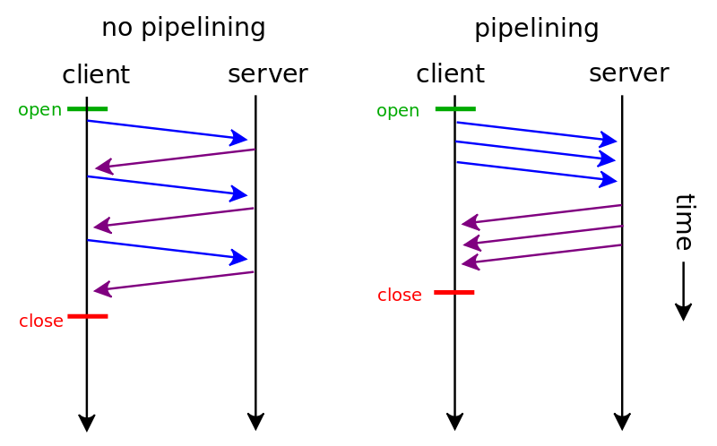
下图是使用 5000 客户端 测试不同的处理时间的性能比较图。
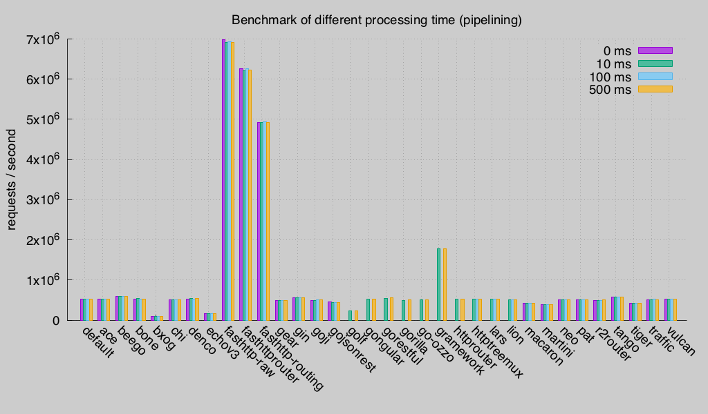
并发
下面这组测试是在业务处理时间限定在30ms的情况下， 使用100、1000、5000的并发client的吞吐情况。
1、100并发
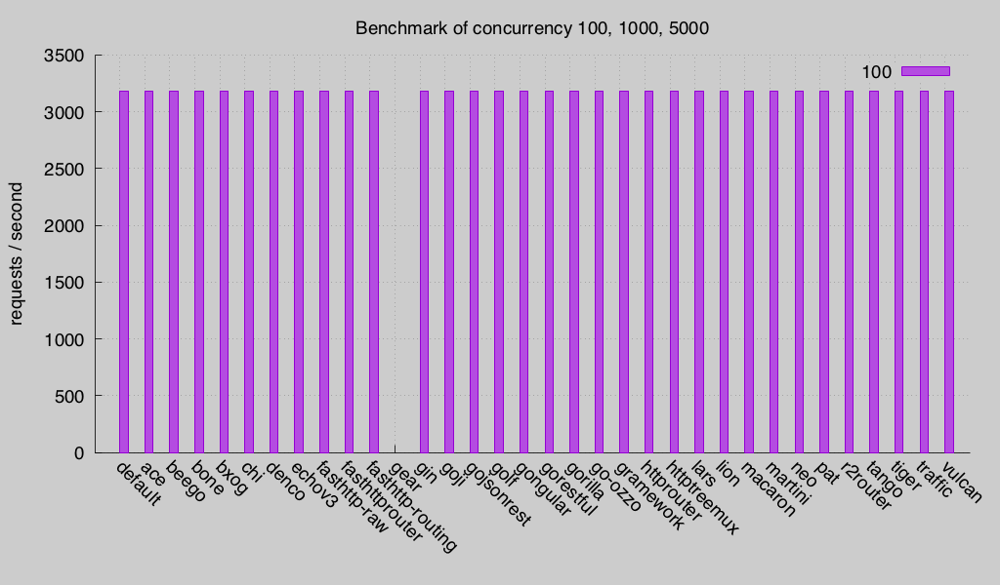
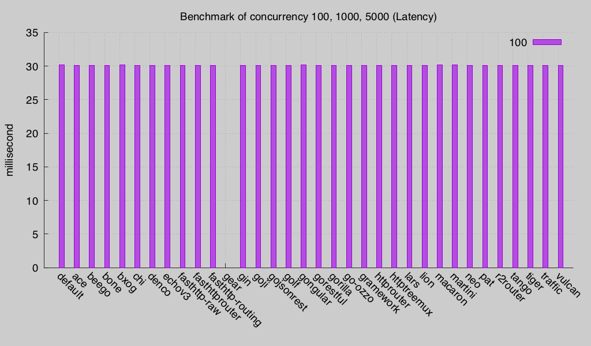
2、1000并发
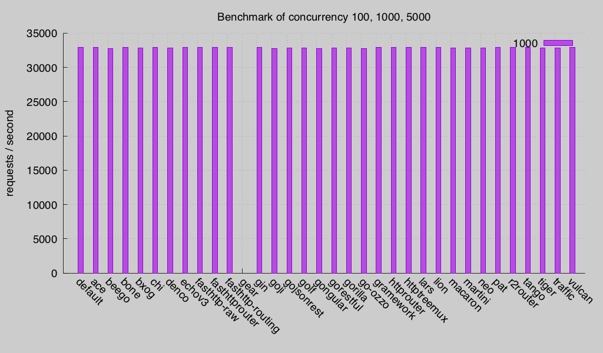
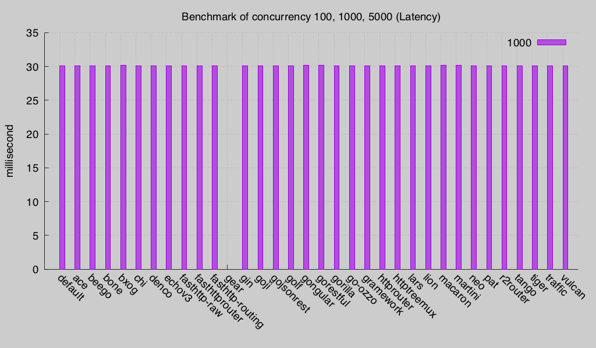
3、5000并发
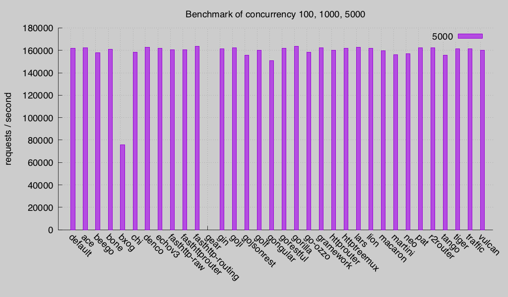
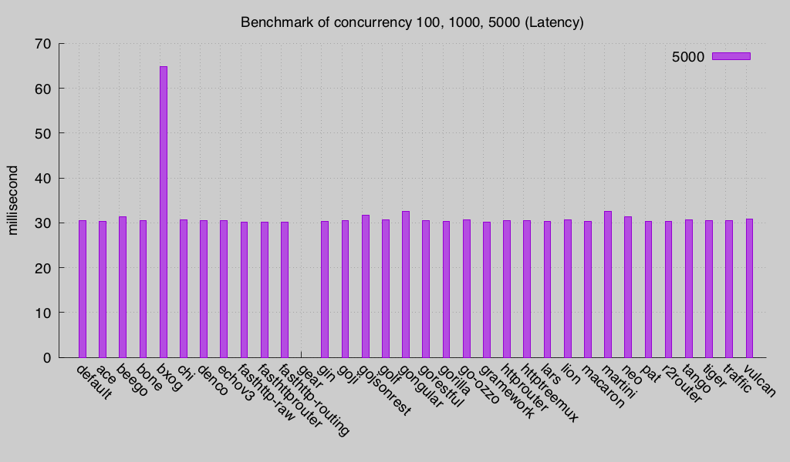
总结
Go Web框架目前已经非常多了，不断的有人造轮子，这是Go Web的设计简单易扩展有关。如果我觉得官方的路由不方便，我就可以很容易的再造一个轮子，这也是go web 框架／router泛滥的缘故， 以至于有人呼吁不要再早轮子了。
从目前既有的web框架看，根据框架的低层看，可以分为两类。一类是基于官方 net/http标准库开发的web框架，一类是基于fasthttp开发的标准库框架。很明显基于fasthttp有更好的性能，但是这类框架也有它们的缺点，不完全支持HTTP协议，比如不支持HEAD，不支持 HTTP2， 各有优缺点，如何选择交给使用者，结合自己实际的情况来选择。比如Echo框架，在最新版中就把对fasthttp的支持去掉了。
另外，julienschmidt的httprouter有着良好的性能，这也是很几个web框架的路由器使用它的原因。
为什么没有关注量很高iris？这是一个复杂而又有争议的问题，参照issue #29、issue #16， 暂时把iris去掉了。
测试代码和最新结果都在 go-web-framework-benchmark